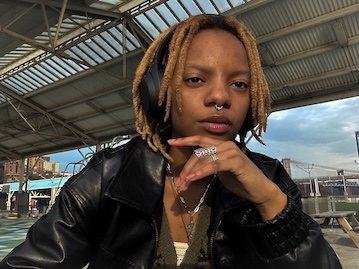

Gabrielle Farrow (Gie F.) is a multimedia artist based in NYC. Born and raised in the heart of Brooklyn, she draws her inspiration from her love for nature, space, and her living experience as a queer Black woman in America.